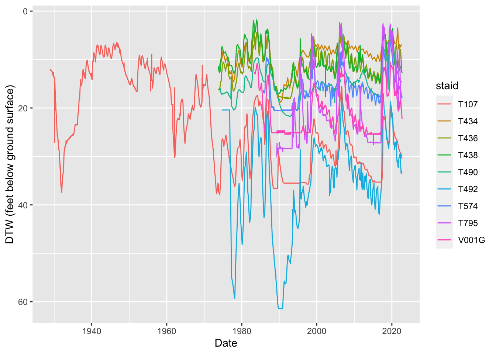

Steps to update ICWD’s monitoring well database from LADWP Water Year Data Transfer
1 Annual Data Transfer
Data from LADWP monitoring well reads, surface water gauging station reads, precipitation reads and aggregated totals and means of these data are typically provided to ICWD in January of each year. This document describes how to process the monitoring wells data and append it to the master database used internally by ICWD and also distributed to other agencies upon request (e.g. Cal Fish and Widlife, Big Pine Environmental Dept, US Fish and Widlife Service, Cal Dept. Water Resources to name a few). The data is also uploaded to the Owens Valley Groundwater Authority (OVGA) data management system and webmap.
Data is provided to ICWD in the ZRXP format - an ASCII data exchange file format of WISKI. I’ve investigated if tools exist to convert ZRXP format into something resembling human readable long format (aka tidy data), but I have not found anything as of 2022. Therefore I use some clunky yet clever excel tricks to tidy this data in a few minutes using the steps described below. After excel processing, I read this tidied data into R for minimal processing which is then appended to the master database with records from 1924 to present and then the special requirements for the OVGA upload is tackled.
The land surface corrected depth to water reads measured from the reference point (RP) and corrected for RP above ground elevation are included in the file labeled with DepthGE. The measurement from the RP are named DepthRP and water surface elevation included in the DepthWSE.
2 Tidy data in Excel
Open
.datfile in excel, in import text wizard, use forward slash ‘/’ as the delimeter.Label the unnamed column containing staids as ‘staid’.
Select the ‘staid’ column, Edit>Go To>Special, Check the Blanks option and press Okay. Under the first row below the first staid, Type (=) key, Up arrow (to select the cell above), holding down the Ctrl key, push Enter and this populates the staid id down the entire staid column.
select entire sheet, under data>Filter, click the filter dropdown on the data column containing both date and read and use
text filterwithbegins with= ‘20’1. This will exclude the header information leaving only the dtw reads. Name this columndateread.Save the staid and data columns into csv and read into R for further processing.
The tidied data update is saved to the data/hydro subdirectory e.g 'data/hydro/DepthGE_2020_2021.csv'.
There is an excel spreadsheet with sequential worksheets demonstrating this process and an accompanying word doc explaining the steps with screen shots (note: add these here). Since this process need only be done once a year, these references should be helpful in the future if the ZRXP output continues to be the sole format provided by LADWP.
3 R steps
3.1 Read data into R
code
# read historical db that was updated the previous year
hist <- read_csv(here('data','hydro','Monitoring_Wells_Master_2021.csv'))
# convert date column to date format
hist$date <- ymd(hist$date)
depthGE <- read_csv(here('data','hydro','DepthGE_2021_2022.csv'))
depthRP <- read_csv(here('data','hydro','DepthRP_2021_2022.csv'))
depthWSE <- read_csv(here('data','hydro','DepthWSE_2021_2022.csv'))separate data column ‘dateread’ into date and dtw read for depthGE, depthRP, depthWSE separate datasets
bind these three together using a full join so that records are not dropped
4 Parse dates
create different date columns separately for year, month, day of month
clean up the date with formal date specification
5 Append updates to master database
# A tibble: 1,048,444 × 11
staid date dtw.rp dtw.bgs wse year month day hour minute source
<chr> <date> <dbl> <dbl> <dbl> <dbl> <dbl> <dbl> <dbl> <dbl> <chr>
1 F001 1971-11-18 4.8 4 NA 1971 11 18 0 0 DWP
2 F001 1972-01-13 4.4 3.6 NA 1972 1 13 0 0 DWP
3 F001 1972-02-11 9.6 8.8 NA 1972 2 11 0 0 DWP
4 F001 1972-03-17 11 10.2 NA 1972 3 17 0 0 DWP
5 F001 1972-04-14 12.8 12 NA 1972 4 14 0 0 DWP
6 F001 1972-05-12 14.3 13.5 NA 1972 5 12 0 0 DWP
7 F001 1972-06-08 14.7 13.9 NA 1972 6 8 0 0 DWP
8 F001 1972-07-13 17.2 16.4 NA 1972 7 13 0 0 DWP
9 F001 1973-01-23 26.7 25.9 NA 1973 1 23 0 0 DWP
10 F001 1973-02-16 27.7 26.9 NA 1973 2 16 0 0 DWP
# … with 1,048,434 more rowswrite to disk for internal use
6 End Adventure for internal processing
csv is written to disk
7 Summary and QA QC checks
- Plot out some indicator well hydrographs
- find unique staids and dates
- ranges of values.
- Often WSE appears to be accidentally entered in the depth measurements
# A tibble: 1,352 × 1
staid
<chr>
1 F001
2 F002
3 F007
4 F009
5 F015
6 F016
7 F018
8 F022
9 F023
10 F024
# … with 1,342 more rows# A tibble: 34,729 × 3
# Groups: staid [1,352]
staid year n
<chr> <dbl> <int>
1 F001 1971 1
2 F001 1972 7
3 F001 1973 7
4 F001 1974 12
5 F001 1975 8
6 F001 1976 12
7 F001 1977 12
8 F001 1978 11
9 F001 1979 10
10 F001 1980 5
# … with 34,719 more rows7.1 Laws
code
mo.dtws <- testwells.combined
# Laws set
staid.set <- c(
'T107',
'T434',
'T436',
'T438',
'T490',
'T492',
'T795',
'V001G',
'T574')
mo.dtws %>% filter(staid %in% staid.set) %>% ggplot(aes(x = date, y = dtw.bgs, color = staid))+
geom_line()+
scale_y_reverse()+
xlab('Date')+
ylab('DTW (feet below ground surface)')
code
code
code
code
7.2 Bishop
code

code
code
7.3 Big Pine
code
# BP set
staid.set <- c(
'T425',
'T426',
'T469',
'T572',
'T798',
'T799',
'T567',
'T800')
# T572
mo.dtws %>% filter(staid %in% staid.set, dtw.bgs <40, year >1990) %>% ggplot(aes(x = date, y = dtw.bgs, color = staid))+
geom_line()+
scale_y_reverse()+
xlab('Date')+
ylab('DTW (feet below ground surface)')code
7.4 Taboose Aberdeen
code
code
staid.set <- c(
'T502',
'T504',
'T505',
'T586',
'T587')# adjacent to groundwater dependent vegetation near W118 and is used to assess the impacts of recent pumping
mo.dtws %>% filter(staid %in% staid.set, year >1970) %>% ggplot(aes(x = date, y = dtw.bgs, color = staid))+
geom_line()+
scale_y_reverse()+
xlab('Date')+
ylab('DTW (feet below ground surface)')W118 and is used to assess the impacts of recent pumping.7.5 Thibaut Sawmill
7.6 Independence Oak
code

The other indicator wells located east and north of Independence (T546 and T809)
7.7 Symmes Shepherd
code
code
7.8 Bairs George
code
code
8 OVGA Steps
8.1 RP elevations
From ICWD Access database 2017 I exported the RP elevations, found the latest RP elevation measurement for each staid and joined this table to the RP DTW updates. For the OVGA update, this table will be joined each year until the RP elevations are updated.
code
# rpelev <- read_csv('data/rp_elev.csv') %>%
# mutate(date = lubridate::mdy(date_c)) %>%
# group_by(staid) %>%
# summarise(date = max(date))%>%
# left_join(rpelev_2, by = c("staid","date")) %>%
# mutate(latest_rp_date = date) %>%
# select(-date,-date_c)
# break up function to make it clear
rpelev <- read_csv(here('data','hydro','rp_elev.csv'))
# date conversion
rpelev_2 <- rpelev %>%
mutate(date = lubridate::mdy(date_c))
# pull the most recent date when rp elevations reported
rpelev_3 <- rpelev_2 %>%
group_by(staid) %>%
summarise(date = max(date))
rpelev_4 <- rpelev_3 %>%
left_join(rpelev_2, by = c("staid","date")) %>%
mutate(latest_rp_date = date) %>%
select(-date,-date_c)
rpelev_4# A tibble: 1,178 × 3
staid rp_elev latest_rp_date
<chr> <chr> <date>
1 F001 3808.699951 2017-09-12
2 F002 3810.600098 2017-09-14
3 F007 3808.199951 2017-08-07
4 F009 3804.389893 2016-09-06
5 F015 3835.929932 1996-12-12
6 F016 3818.439941 1993-01-08
7 F018 3805.899902 2017-06-20
8 F022 3806.699951 2017-08-07
9 F023 3824.899902 2017-08-07
10 F024 3805.199951 2016-08-01
# … with 1,168 more rowsread in processed data through the most recent water year updates
filter the master data table to the years needed for OVGA updates. Now that it is updated through the 2022 water year, follow instruction by changing the filter date to pluck off the update year.
code
# A tibble: 133,891 × 3
staid date dtw.rp
<chr> <date> <dbl>
1 T455 2021-10-25 7.5
2 T455 2022-01-13 7.27
3 T455 2022-04-29 7.15
4 T455 2022-07-18 7.71
5 T508 2021-10-29 13.8
6 T508 2022-01-14 13.6
7 T508 2022-04-14 13.3
8 T508 2022-07-19 13.6
9 T549 2022-04-29 17.6
10 T630 2021-10-25 6.3
# … with 133,881 more rowsjoin the rp elevations to the annual updates
code
# A tibble: 133,891 × 5
staid date dtw.rp rp_elev latest_rp_date
<chr> <date> <dbl> <chr> <date>
1 T455 2021-10-25 7.5 3823.4 2018-03-30
2 T455 2022-01-13 7.27 3823.4 2018-03-30
3 T455 2022-04-29 7.15 3823.4 2018-03-30
4 T455 2022-07-18 7.71 3823.4 2018-03-30
5 T508 2021-10-29 13.8 3787.1 2018-03-27
6 T508 2022-01-14 13.6 3787.1 2018-03-27
7 T508 2022-04-14 13.3 3787.1 2018-03-27
8 T508 2022-07-19 13.6 3787.1 2018-03-27
9 T549 2022-04-29 17.6 3858.800049 2017-04-17
10 T630 2021-10-25 6.3 3813.100098 2017-07-26
# … with 133,881 more rowshow many staids in LA database received and how many are missing from the ovga database
read in ovga points here
# A tibble: 6,048 × 8
mon_pt_id site_id mon_pt_name mon_pt_lat mon_pt_long coord…¹ county hide_…²
<dbl> <dbl> <chr> <dbl> <dbl> <chr> <chr> <dbl>
1 1 1 01S32E29D001M 37.8 -118. NAD83 Mono 0
2 2 1 01S32E31J002M 37.8 -118. NAD83 Mono 0
3 3 1 01S32E32E001M 37.8 -118. NAD83 Mono 0
4 4 1 04S33E08M001M 37.6 -118. NAD83 Mono 0
5 5 1 05S33E09X001M 37.5 -118. NAD83 Mono 0
6 6 1 05S33E18D001M 37.5 -118. NAD83 Mono 0
7 7 1 06S31E05H001M 37.5 -119. NAD83 Inyo 0
8 8 1 06S31E17B001M 37.4 -119. NAD83 Inyo 0
9 9 1 06S31E19G001M 37.4 -119. NAD83 Inyo 0
10 10 1 06S31E20H001M 37.4 -119. NAD83 Inyo 0
# … with 6,038 more rows, and abbreviated variable names ¹coord_sys,
# ²hide_from_publiccode
LA.staids <- dtwrpavg.rpelev %>% group_by(staid) %>% summarise(records = n())
LA.staids.in.ovga <- LA.staids %>% semi_join(ovga_points, by = c("staid"="mon_pt_name"))
LA.staids.notin.ovga <- LA.staids %>% anti_join(ovga_points, by = c("staid"="mon_pt_name"))
#1045 staids provided by LA and 822 of these staids present in ovga database. 223 not in ovga database.
# in 2022, 71 staids not in ovga db
LA.staids# A tibble: 804 × 2
staid records
<chr> <int>
1 F033 9
2 F035 9
3 F037 1
4 F052 12
5 F077 13
6 F082 10
7 F085 12
8 F122 1
9 F124 11
10 F380 1
# … with 794 more rowscode
# A tibble: 733 × 2
staid records
<chr> <int>
1 F033 9
2 F035 9
3 F037 1
4 F052 12
5 F077 13
6 F082 10
7 F085 12
8 F122 1
9 F124 11
10 T001 2
# … with 723 more rows# A tibble: 71 × 2
staid records
<chr> <int>
1 F380 1
2 FS3D 365
3 FS3S 365
4 S001 4
5 S002 4
6 S004 4
7 S005 4
8 S006 4
9 S007 4
10 T313B 12
# … with 61 more rowsmonitoring points missing rp elevations after join
code
# LA.staids.in.ovga
# find how many staids are missing rp elevation
na.rp.elev <- dtwrpavg.rpelev %>%
semi_join(LA.staids.in.ovga, by = 'staid') %>%
filter(is.na(rp_elev)) %>%
group_by(staid) %>%
summarise(count.na = n())
# in 2022, 97 with NA, missing rp elevations
#278 staids with NA missing rp elevations.
na.rp.elev# A tibble: 18 × 2
staid count.na
<chr> <int>
1 T013U 11
2 TT02 6
3 TT04 6
4 TT05 6
5 TT07 6
6 TT08 6
7 TT09 6
8 TT10 6
9 TT17 6
10 TT18 6
11 TT37 6
12 W059 12
13 W103 9
14 W104 1
15 W371 8
16 W381 2
17 W382 11
18 W389 3278 out of 1045 staids LA provided no rpe
find staids without GSEs and RPEs in the county data
# A tibble: 0 × 2
# … with 2 variables: staid <chr>, count.na <int>update 2022 - out of 97 staids without RPE, 15 without rpe, leaving 82 with GSE
out of 278 staids without RPE in the upload set, 168 staids without rpe or gse in the old access db leaving 110 that can be uploaded with a gse join once i do that. out of this 110, only 26 are currently in the ovga meaning we need to add some points to ovga database.
# A tibble: 18 × 2
staid count.na
<chr> <int>
1 T013U 11
2 TT02 6
3 TT04 6
4 TT05 6
5 TT07 6
6 TT08 6
7 TT09 6
8 TT10 6
9 TT17 6
10 TT18 6
11 TT37 6
12 W059 12
13 W103 9
14 W104 1
15 W371 8
16 W381 2
17 W382 11
18 W389 3110 staids with gse that can be joined
# A tibble: 0 × 2
# … with 2 variables: staid <chr>, count.na <int>out of 168 staids 142 of these not in ovga
# A tibble: 0 × 2
# … with 2 variables: staid <chr>, count.na <int>26 in ovga that need gse joins
total records from monitoring points missing rp elevations
code
# A tibble: 1 × 1
count.na
<int>
1 117filter records in the set corresponding to monitoring points without rp elevation
# A tibble: 117 × 4
# Groups: staid, date [117]
staid date rp_elev dtw.rp
<chr> <date> <chr> <dbl>
1 T013U 2021-10-29 <NA> 5.1
2 T013U 2021-11-18 <NA> 4.74
3 T013U 2021-12-19 <NA> 4.26
4 T013U 2022-01-20 <NA> 3.58
5 T013U 2022-02-14 <NA> 3.1
6 T013U 2022-03-28 <NA> 3.01
7 T013U 2022-05-25 <NA> 3.4
8 T013U 2022-06-09 <NA> 3.97
9 T013U 2022-07-18 <NA> 4.9
10 T013U 2022-08-15 <NA> 4.97
# … with 107 more rowscode
# 453,119 from 278 staids have no rp elevations
# 36,517 aggregated to daily
# we can filter out these staids for now, save the list and when rp elevations are updated we can add
# the wells within OVGA area. 278
# which wells are etape or pressure transducer measured
# infer based on number of measurementsNumber of records from staids with rp elevations
code
# classify method by frequency of measurements. This count only valid for this 4-year set. annual updates would need a daily analysis. per kr, less than
# record.number <- dtwrp.rpelev %>%
# filter(!is.na(rp_elev)) %>%
# group_by(staid) %>%
# summarise(count.with.rpe = n()) %>%
# mutate(MMethod = case_when(count.with.rpe >1000 ~ "TR",
# count.with.rpe <200~ "ES"))
record.number <- dtwrp.rpelev %>%
filter(!is.na(rp_elev)) %>%
group_by(staid) %>%
summarise(count.with.rpe = n()) %>%
mutate(MMethod = case_when(count.with.rpe >= 48 ~ "TR",
count.with.rpe < 48~ "ES"))
record.number %>% arrange(-count.with.rpe)# A tibble: 756 × 3
staid count.with.rpe MMethod
<chr> <int> <chr>
1 T752 8737 TR
2 T753 8737 TR
3 T754 8737 TR
4 T755 8737 TR
5 T756 8737 TR
6 T757 8737 TR
7 T759 8737 TR
8 T758 8036 TR
9 T733 4950 TR
10 V251 4117 TR
# … with 746 more rowsselect only data with rp elevations
use a semi_join filter to retain only monitoring points in the OVGA database.
6,048 points including monitoring wells, pumping wells, surface water gauging stations.
code
# methodinfer %>% distinct()
methodinfer <- record.number %>% select(-count.with.rpe)
# %>% distinct(staid)
upload <- rpselect2 %>%
left_join(methodinfer, by = "staid") %>%
# select(-latest_rp_date) %>%
select(WellName = staid,
DateMeasured = date,
DepthToWater = dtw.rp,
ReferencePointElevation = rp_elev,
MMethod) %>%
mutate(ExclusionCondition = "" ,
QAQCLevel = "High",
MeasMethod = MMethod,# from join above
NoMeasFlag = "",
QuestMeasFlag = "",
DataSource = "LADWP",
Notes = "") %>%
select(-MMethod)%>%
filter(DepthToWater < 500 & !is.na(DepthToWater) & DepthToWater != 'NA' & DepthToWater != -777 & ReferencePointElevation !=0)
# need to pull out RPE = 0 and add to the set without measured RPE
#
upload # A tibble: 15,696 × 11
# Groups: WellName, DateMeasured [15,696]
WellName DateMeasured Depth…¹ Refer…² Exclu…³ QAQCL…⁴ MeasM…⁵ NoMea…⁶ Quest…⁷
<chr> <date> <dbl> <chr> <chr> <chr> <chr> <chr> <chr>
1 F033 2022-01-07 4.55 3833.5 "" High ES "" ""
2 F033 2022-02-09 4.57 3833.5 "" High ES "" ""
3 F033 2022-03-09 4.57 3833.5 "" High ES "" ""
4 F033 2022-04-05 4.57 3833.5 "" High ES "" ""
5 F033 2022-05-05 4.57 3833.5 "" High ES "" ""
6 F033 2022-06-01 4.57 3833.5 "" High ES "" ""
7 F033 2022-07-07 4.57 3833.5 "" High ES "" ""
8 F033 2022-08-02 4.57 3833.5 "" High ES "" ""
9 F033 2022-09-07 4.57 3833.5 "" High ES "" ""
10 F035 2022-01-07 10.4 3834.6… "" High ES "" ""
# … with 15,686 more rows, 2 more variables: DataSource <chr>, Notes <chr>, and
# abbreviated variable names ¹DepthToWater, ²ReferencePointElevation,
# ³ExclusionCondition, ⁴QAQCLevel, ⁵MeasMethod, ⁶NoMeasFlag, ⁷QuestMeasFlagF122 has rp of zero. filter out faulty rp data entry errors with 0 for rp zero use GSE, so create elevation bracket filter to exclude erroneous entries and default to using GSE.
need to split out electronic pressure transducer (TR) vs electric sounder measurement (ES)
9 GLA Data Depth to Water Import Procedures
A blank template for importing ground water elevation data into the GLA Data Web application can be downloaded from this location:
https://owens.gladata.com/d2wImportTemplate.xlsx
Excel Workbook Format
The uploaded Excel Workbook must be an Excel Workbook file and must contain one and exactly one spreadsheet. That spreadsheet must contain exactly 11 columns with the following names in this exact order:
Any violation of the above rules causes the entire upload to be rejected.
WellName The WellName column is required and must contain the name of a monitoring point within the basin selected when the file was uploaded.
DateMeasured The DateMeasured column is required. The field must be a date and can not be in the future nor more than 100 years in the past.
DepthToWater This column must be blank or numeric. DepthToWater is the number of feet from the reference point. If blank, ExclusionCondition is required and ReferencePointElevation must also be blank.
why import if depth to water is blank
ReferencePointElevation This column must be blank or numeric. ReferencePointElevation is the elevation in feet. If blank, ExclusionCondition is required and DepthToWater must also be blank.
ExclusionCondition This column must be blank or contain the text “Dry”, “Pumping” or “See Note”. If blank, DepthToWater and ReferencePointElevation are required. If it contains one of the supported values, DepthToWater and ReferencePointElevation must be blank.
QAQCLevel This field is required and must be one of the following values: High, Medium, Low, Undecided.
MeasMethod This field is required and must be one of the values in the accompanying lookup table.
NoMeasFlag This field must be blank or be one of the values in the accompanying lookup table.
QuestMeasFlag This field must be blank or be one of the values in the accompanying lookup table.
DataSource This field must be blank or be one of the values in the accompanying lookup table.
Procedure If the upload contains any rows that violate these rules, the entire upload fails and the row and reason for the violation are reported to the user. If the upload contains no violations, the user is presented with a preview of all the rows with the calculated ground water elevation that will be added and is prompted to confirm the import.
Footnotes
this should work for the next 977 years until Y3K↩︎
Citation
@report{nelson2022,
author = {Zach Nelson},
publisher = {Inyo County Water Department},
title = {Steps to Update {ICWD’s} Monitoring Well Database from
{LADWP} {Water} {Year} {Data} {Transfer}},
volume = {1},
date = {2022-12-05},
url = {https://zach-nelson.github.io/open-science-notebook/posts/monitoring-wells/},
langid = {en}
}